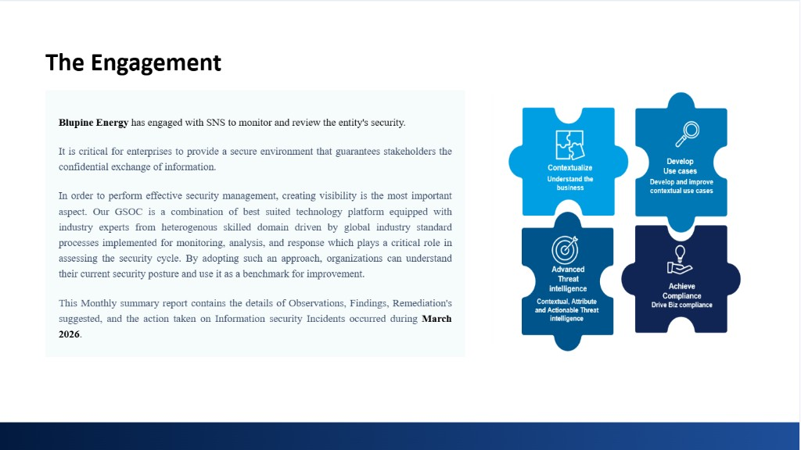

MANAGED INCIDENT RESPONSE &REMEDIATION SERVICE Monthly SOC Report | Document Revision History Version 1.0 Dated Prepared By Reviewed By Approved By Submitted On The Engagement has engaged with SNS to monitor and review the entity's security.  Total Potential Incident March High 14 Medium 47 Potential Incident Tickets Trend Incident details are provided below. Rule-Based Severity Categories For Potential Incidents Response Time SLA Remediation Time SLA Severity Level Description Severity Level Response Resolution/Remediation High Severity ticket resulted in extremely serious interruptions to Business system. It has affected the user community S-1 ≤15 Minutes 4 Hours Medium Severity ticket resulted in interruptions normal operations. It does not prevent Business Operations or minor ticket S-2 ≤15 Minutes 8 Hours Low Severity A Request/Query/Service that does not change existing service structure and no cost implication S-3 ≤30 Minutes 24 Hours Severity Level Description Severity Level Resolution/Remediation High Severity ticket resulted in extremely serious interruptions to Business system. It has affected the user community High 4 Hours Medium Severity ticket resulted in interruptions normal operations. It does not prevent Business Operations or minor ticket Medium 8 Hours Low A Request/Query/Service that does not change existing service structure and no cost implication Low 24 Hours Total Alerts Triggered in FortiSIEM March High 24 Medium 9725 Low 1276 Total Number Of True & False Positive Alerts True Positive Alerts based on Severity March High 55 Medium 976 Low 1276 False Positive Alerts based on Severity March High 107 Medium 8749 Low 0 EPS Trend Plot March 371 Highest EPS Consuming Events For Mentioned Firewalls S.No Reporting Device Event Type Event Name Matched Events Overall Support Ticket Handled By SNS (Firewall Support) Major tickets Created by Status Grand Total Closed In-process Minor tickets Created by Status Closed Integrated Device Inventory S.NO DEVICE NAME COUNT Key Points - Overall Summary Your Trusted Security Advisor FOR FURTHER DETAILS: Diptesh Saha CISO & Practice Head - Cyber Security & Managed Security Contact No. 7338882888 diptesh.s@snsin.com